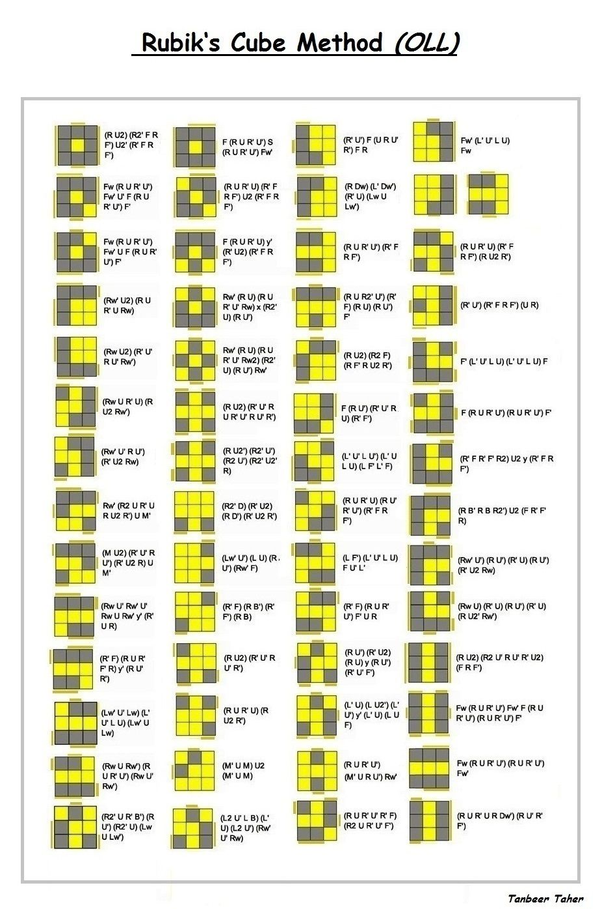

Back
Step: #3
Orientation of the last layer
Now we will solve the top yellow face of the cube.
Make sure to remember the rules from the previous step like not turning unless it says.
- 1. New Algorithm Notation:
Any upper case letter next to a lowercase (Rw)
Will be executed by turning the letter and the center along with it
- 2. Follow each pattern until you have the yellow face complete
- 3. Move on to PLL
